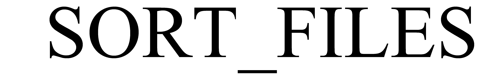

Automatic File Sorting Tool
This tool automatically organizes files inside a specified folder, moving them into appropriate subfolders based on their file type or extension.
Note
Warning: Runs in dry-run mode by default. Always back up important files before running with --apply.
If Windows SmartScreen appears, click "More info" -> "Run anyway" (or run sort_files.py directly with Python).
Supported OS: Windows, Linux, macOS
download
sort_files.zip(windows) sort_files.py(linux/mac)license
licensememo
1. Released: 2026-11-24 | Distributed: 2026-11-24